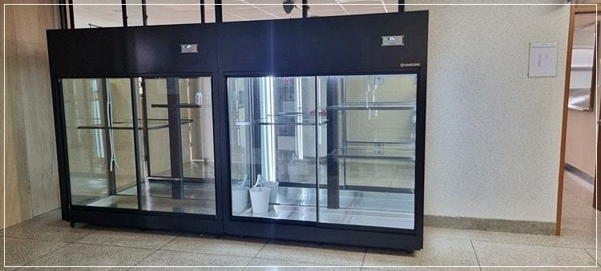
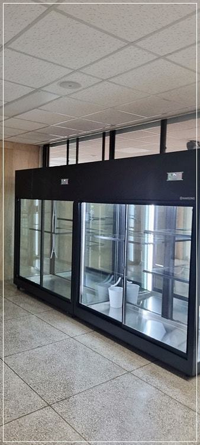
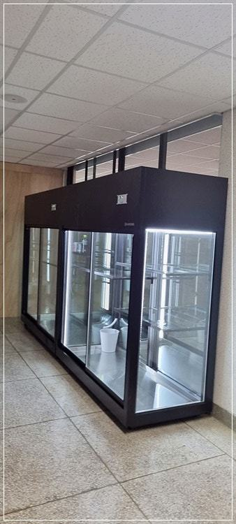
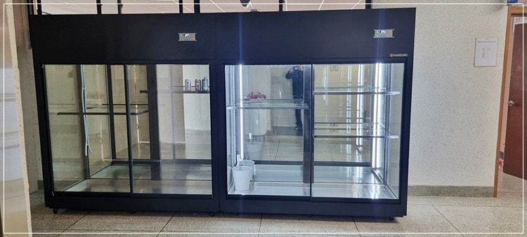
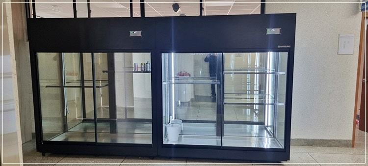
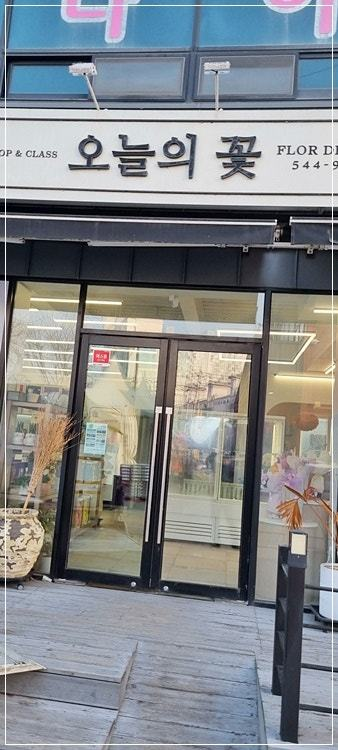
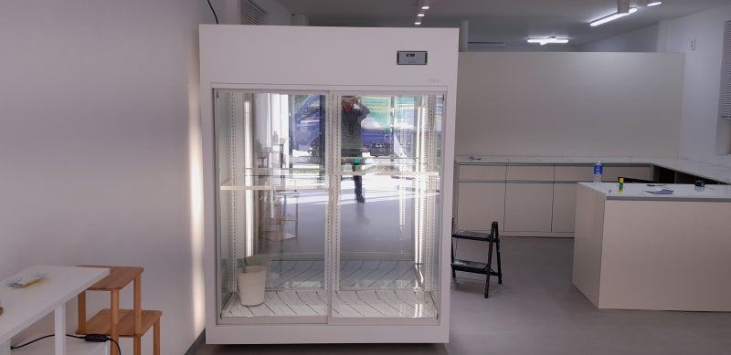

꽃냉장고
꽃냉장고 견적 비교할 때 금액 말고 먼저 맞춰 볼 항목

꽃냉장고 견적을 비교할 때는 금액보다 먼저 형태와 크기, 바람이 꽃에 직접 닿지 않는 냉각 구조, 결로 방지 유리, 문 방식, 조명, 배송·설치 포함 여부가 같은 조건인지 맞춰 보셔야 합니다. 조건이 다른 견적은 금액이 낮아 보여도 나중에 꽃 폐기나 추가 비용으로 차이가 드러납니다.
안녕하세요. 꽃집과 플라워 공방의 꽃냉장고를 매장 인테리어에 맞춰 설계하는 한성쇼케이스입니다.
꽃집을 열거나 리모델링을 준비하시면서 꽃냉장고 견적을 몇 군데 받아 보시면, 비슷해 보이는 제품인데 금액도 구성도 제각각이라 무엇을 기준으로 골라야 할지 막막하실 겁니다.
꽃냉장고는 음료 냉장고와 달리 바람과 습도를 꽃에 맞춰야 하고, 매장 한쪽 벽이나 중앙을 크게 차지해 인테리어의 중심이 되는 장비입니다.
그래서 견적서에 적힌 한 줄 한 줄이 꽃 상태와 매장 분위기에 직접 연결됩니다.
오늘은 꽃냉장고 견적을 받을 때 준비할 정보와, 여러 견적을 같은 조건으로 비교하기 위해 확인할 항목을 정리해 드리겠습니다.
1. 형태와 크기부터 정하기
꽃냉장고는 매장 가운데나 카운터 옆에 두는 상치형, 한쪽 벽을 채우는 벽면형, 뒷벽까지 유리로 된 통유리형처럼 형태가 다양합니다.
형태가 다르면 구조와 금액이 크게 달라지니 견적을 요청하기 전에 원하는 형태를 먼저 정해 두세요.
크기는 하루에 다루는 꽃의 양과 꽃병 높이로 정합니다. 키 큰 꽃을 세워 두려면 내부 높이가 충분해야 하고, 사장님 키에 맞춰 손이 편하게 닿는 높이인지도 함께 보셔야 합니다.
견적을 요청하실 때는 설치 자리의 가로·깊이·높이와 주변 사진, 매장 인테리어 톤을 함께 보내 주세요.
프레임 색과 소재까지 미리 정해 두시면 업체마다 같은 조건으로 견적이 나와 비교하기가 훨씬 쉬워지고, 나중에 사양이 바뀌어 금액이 달라지는 일도 줄어듭니다.
- 상치형·벽면형·통유리형 중 형태를 정하세요.
- 가장 키 큰 꽃병 높이를 재 두세요.
2. 냉각 구조와 습도 유지
견적서에 냉각 방식이 어떻게 적혀 있는지 확인하세요. 꽃에는 찬바람을 직접 쏘지 않고 부드럽게 순환시키는 간접 냉각 구조가 맞습니다.
바람이 강한 구조는 금액이 비슷해도 꽃잎이 빨리 마릅니다.
온도 조절 범위도 확인해 보세요. 일반 절화와 열대 식물, 난류는 맞는 온도가 달라 다양한 꽃을 다룬다면 세밀하게 조절할 수 있어야 합니다.
어떤 콤프레셔가 들어가는지도 견적서에 적어 달라고 하세요.


3. 유리, 문, 조명
습도를 높게 유지하는 꽃냉장고는 유리에 결로가 생기기 쉬워 결로 방지 페어 유리가 들어가는지가 중요합니다.
같은 크기라도 유리 사양에 따라 금액 차이가 납니다.
문은 공간이 좁으면 슬라이딩, 큰 꽃다발을 자주 꺼내면 여닫이가 편합니다. 조명은 열이 적은 LED인지, 꽃 색이 자연스럽게 보이는 색인지 확인하세요.
같은 항목이 한쪽 견적에는 포함되고 다른 쪽에는 빠져 있는 경우가 많으니 항목별로 맞춰 보셔야 합니다.
- 결로 방지 유리 포함 여부를 확인하세요.
- 문 방식과 조명 종류를 견적서에서 비교하세요.
4. 설치 조건과 사후 관리
배송과 설치, 기존 장비 철거가 견적에 포함됐는지 확인하세요. 꽃집은 물을 많이 쓰니 배수 위치와 콘센트 위치도 미리 알려 주셔야 설치 당일 추가 작업이 생기지 않습니다.
꽃냉장고가 멈추면 그날 꽃을 통째로 잃을 수 있습니다. 고장 시 어디로 접수하는지, 지방 매장도 대응이 되는지 견적 단계에서 물어보세요.
한성쇼케이스는 전국 240여 개 A/S 센터를 운영하고 있습니다.
체크리스트
- 형태(상치형·벽면형·통유리형)와 크기
- 간접 냉각 구조와 온도 조절 범위
- 콤프레셔 종류
- 결로 방지 유리와 문 방식
- LED 조명 색
- 배송·설치·배수 조건과 A/S 접수처
리모델링하며 다시 맞춘 상치형 꽃집냉장고
예전에 작은 상치형 꽃냉장고를 맞추셨던 꽃집 사장님이 매장을 리모델링하면서 다시 의뢰해 주신 현장입니다.
이전 제품을 운영 기간 내내 잔고장 없이 쓰셨다며, 이번에는 바뀐 매장 규모와 인테리어에 맞는 상치형 꽃냉장고를 새로 설계하기로 사전 미팅에서 정했습니다.
매장 한편을 크게 차지하는 장비라 상담을 거쳐 인테리어와 어울리는 디자인을 잡고, 사용하는 사람이 편하도록 구조를 다듬었습니다.
설계부터 제작, 설치까지 직접 진행하고, 출고 전 품질 테스트를 거친 뒤 설치를 마쳤습니다.








자주 묻는 질문
꽃냉장고 견적은 방문해야만 받을 수 있나요?
설치 자리 치수와 사진, 원하는 형태를 알려 주시면 먼저 대략적인 구성을 안내해 드릴 수 있습니다. 확정 전에는 현장 확인으로 사양을 맞춥니다.
중고 꽃냉장고와 견적 차이가 크지 않다면 어느 쪽이 나을까요?
차이가 크지 않다면 새 제품이 매장 크기와 인테리어에 맞출 수 있고 사후 관리도 분명합니다. 중고는 냉각 구조와 A/S 가능 여부를 꼭 확인하세요.
견적 상담은 어디로 하면 되나요?
대표전화 031-986-2458로 연락 주시면 됩니다. 매장 사진과 원하는 형태를 미리 보내 주시면 상담이 빨라집니다.
매장 조건에 맞춰 만드는 한성쇼케이스
원하시는 제품 사진과 설치할 공간 사진만 보내 주셔도 매장에 맞는 구성을 추천해 드립니다.
- 전국 240여 개 A/S 전담 센터 운영
- 본사 대량 자재 매입으로 품질 대비 합리적인 가격
- 유럽제·삼성 냉각 콤프레셔 적용
- 국내 최초 쇼케이스 전문 디자이너 상주
매장 폭과 원하는 진열 구성을 알려 주세요. 실측과 견적을 안내해 드립니다.
031-986-2458